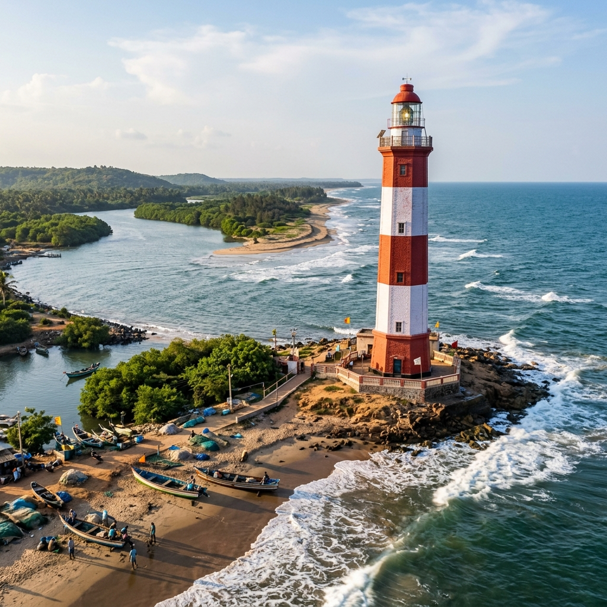

Kalingapatnam Ancient Port Explorer
Explore Kalingapatnam, where the Vamsadhara River meets the Bay of Bengal. Discover the legendary seafaring history of the Kalinga Dynasty, ancient trade routes to Java and Sumatra, and the iconic 19th-century lighthouse.
Maritime Capital of the Kalinga Kings
Situated in the Srikakulam district of Andhra Pradesh, Kalingapatnam served as one of the premier ports of the historic Kalinga Empire. Known for its seafaring legacy, the port was a thriving urban trade center where river transport connected the interior forests directly to the Bay of Bengal.
Excavations at nearby Salihundam, a Buddhist heritage hill, reveal clay pottery, Roman gold coins, and ancient inscriptions dating back to the 2nd century BCE. This archaeological evidence establishes Kalingapatnam's status as a highly connected seaport that engaged in global commerce and hosted travelers from across the ancient world.
🏺 Ancient Heritage
- River Estuary: Located where the Vamsadhara River empties into the Bay of Bengal.
- Roman Trade: Excavated Roman coins indicate early commercial ties with Mediterranean merchant empires.
- Buddhist Beacon: Salihundam stupas served as structural beacons, guiding ships and harboring pilgrim sailors.
Voyages to Java, Sumatra, and Ceylon
Kalingapatnam's mariners mastered the monsoonal wind patterns, mapping out long-distance routes across the Bay of Bengal.
Suvarnabhumi Navigation
Ships departed with the winter monsoon, sailing south and east to trade directly with Java, Sumatra, Bali, and the Malay Peninsula (Suvarnabhumi).
Ceylon Connections
Exchanged premium Kalinga cotton textiles and ivory for spices, pearls, and precious gems from Ceylon (Sri Lanka).
Cultural Footprint
The name **Kling** (historically used in Malaysia and Indonesia to denote Indians) directly originates from the name of the Kalinga sailors who docked at their ports.
🗼 The Kalingapatnam Beacon
- Modern Revival: Developed by the British in the 19th century as a key port to export local grain, jute, and coir.
- Octagonal Tower: Finished in 1905, the 30-meter lighthouse features distinct red-and-white octagonal bands.
- Active Warning: Remains operational, flashing a white beam every 15 seconds to guide ships along the Andhra coastline.
The Red-and-White Sentinel of the Sea
Kalingapatnam's importance did not end with the ancient era. During the British colonial period, the port was revived to export industrial quantities of jute, sesame seeds, and coir to European centers.
To safely guide large cargo steamships past the dangerous sandbars of the Vamsadhara estuary, the British completed the iconic Kalingapatnam Lighthouse in 1905. Constructed of local brick and stone, the octagonal tower has stood as a guardian of the eastern shipping lanes for over a century.
Chronology of Kalingapatnam Port
Tracking Kalingapatnam's maritime timeline from antiquity to the modern era.
Buddhist Maritime Links
Salihundam Buddhist monastery is established on the hill overlooking the Vamsadhara River, acting as a spiritual haven for seafarers.
The Golden Era of Kalinga
Sovereign Kalinga kings build large merchant fleets. The term 'Kling' is established in Southeast Asian ports as trade flourishes.
Colonial Trade Rebirth
The British East India Company re-establishes Kalingapatnam as a minor commercial port, constructing storage warehouses and custom houses.
Lighthouse Completion
The 30-meter octagonal Kalingapatnam Lighthouse is completed, providing a critical navigation guide for the eastern coast.
Coastline and Lighthouses of Kalinga
Take a virtual look at Kalingapatnam's iconic structures and river estuaries.



📚 References & Further Reading
- Behera, K. S. (1999). Maritime History of Orissa. Kaveri Books.
- Subrahmanyam, R. (1964). Salihundam: A Buddhist Site in Andhra Pradesh. Andhra Pradesh Government Archaeological Series.
- Rajaguru, S. N. (1960). Inscriptions of Orissa. Orissa State Museum.
- British Maritime Registry. Lighthouse Logs and Customs Records for Madras Presidency Ports (1890-1920).